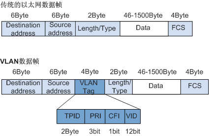

本文介绍 VLAN 和 VXLAN 网络虚拟化技术，并同时给出了 Access、Trunk 和 Hybrid 端口的区别，以及它们对 VLAN 报文的处理方式。
VLAN 封装
要使网络设备能够分辨不同的 VLAN 报文，需要在报文中添加标识 VLAN 的字段。由于 二层交换机工作在数据链路层，只能对报文的数据链路层封装进行识别。因此，如果添加识别字段，也需要添加到数据链路层封装中。
IEEE 802.1Q 协议规定，在以太网报文的目的 MAC 地址和源 MAC 地址之后、协议类型字段之前 加入 4 个字节的 VLAN Tag，用以标识 VLAN 的相关信息。
TPID用来表示报文是否带有 VLAN Tag，长度为 16 bits，缺省情况下，TPID取值为0x8100，表示数据帧中包括 VLAN Tag，但各设备厂商可以自定义该字段的值。VID用来表示该报文所属 VLAN 的编号，长度为 12 bits，取值范围可为[0, 4095]。由于0和4095为协议保留取值，所以VID的实际取值范围为[1, 4094]。
网络设备根据报文是否携带 VLAN Tag 以及携带的 VLAN Tag 信息，来对报文进行处理，利用 VID 来识别报文所属的 VLAN。
因为
VID的实际取值范围为[1, 4094]，所以最多可以划分 4094 个不同的 VLAN 网络。
基于端口的 VLAN
基于端口划分 VLAN 是最简单、最有效的 VLAN 划分方法。它按照设备端口来定义 VLAN 成员，将指定端口加入到指定 VLAN 中之后，该端口就可以转发该 VLAN 的报文。
Access&Trunk&Hybird 端口区别
端口的链路类型分为三种，端口的链路类型决定了端口能否加入多个 VLAN。不同链路类型的端口在转发报文时对 VLAN Tag 的处理方式不同。
-
Access端口：只能发送一个 VLAN 的报文，不带 VLAN Tag。- 一般用于和不能识别 VLAN Tag 的用户终端设备相连，或者不需要区分不同 VLAN 成员时使用。
-
Trunk端口：可以发送多个 VLAN 的报文，缺省 VLAN 的报文不带 VLAN Tag，其他 VLAN 的报文必须带 VLAN Tag。- 通常用于网络传输设备之间的互连。
-
Hybrid端口：可以发送多个 VLAN 的报文，并可根据需要配置某些 VLAN 的报文带 VLAN Tag，某些 VLAN 的报文不带 VLAN Tag。- 在一些应用场景下，需要使用
Hybrid端口的功能。比如在 1:2 VLAN 映射中，服务提供商网络的多个 VLAN 的报文在进入用户网络前，需要剥离外层 VLAN Tag，此时Trunk端口不能实现该功能，因为Trunk端口只能使该端口缺省 VLAN 的报文不带 VLAN Tag 通过。
- 在一些应用场景下，需要使用
端口缺省 VLAN
端口缺省 VLAN 简称为 PVID（Port VLAN ID）。当端口收到 Untagged 报文时，会认为该报文所属的 VLAN 为 PVID。
Access端口的 PVID 就是它所在的 VLAN。Trunk端口和Hybrid端口可以允许多个 VLAN 通过，能够配置端口 PVID。
端口对报文的处理方式
端口对报文的接收和发送的处理有几种不同情况。
Access 端口：
- 接收：
- 接收的报文不带 TAG：为报文添加端口 PVID 的 Tag；
- 接收的报文带 TAG：当报文的 VLAN ID 与端口的 PVID 相同（不同）时，接收（丢弃）该报文。
- 发送：去掉 TAG，发送该报文。
Trunk 端口：
- 接收：
- 接收的报文不带 TAG：当端口的 PVID 在（不在）端口允许通过的 VLAN ID 列表里时，接收该报文，给报文添加 PVID 的 Tag（丢弃该报文）。
- 接收的报文带 TAG：当报文的 VLAN ID 在（不在）端口允许通过的 VLAN ID 列表里时，接收（丢弃）该报文。
- 发送：当报文的 VLAN ID 与端口的 PVID 相同（不同），且是该端口允许通过的 VLAN ID 时：去掉 Tag（保持原有 Tag），发送该报文。
Hybird 端口：
- 接收：
- 接收的报文不带 TAG：当端口的 PVID 在（不在）端口允许通过的 VLAN ID 列表里时，接收该报文，给报文添加 PVID 的 Tag（丢弃该报文）。
- 接收的报文带 TAG：当报文的 VLAN ID 在（不在）端口允许通过的 VLAN ID 列表里时，接收（丢弃）该报文。
- 发送：当报文的 VLAN ID 是端口允许通过的 VLAN ID 时，发送该报文，并可以配置端口在发送该 VLAN 的报文时是否携带 Tag。
VXLAN
VXLAN 简介
VXLAN（Virtual eXtensible LAN，可扩展虚拟局域网络）是一种基于 IP 网络构建逻辑拓扑、采用 MAC in UDP 封装的 二层 VPN 技术 。VXLAN 可以基于已有的服务提供商或企业 IP 网络，为分散的物理站点提供二层和三层互联，并能为不同用户提供业务隔离服务。VXLAN 主要应用于数据中心网络，能够创建 更多 的虚拟网络。
VXLAN 技术价值
-
VXLAN 支持大量租户：支持多达 1600 万个相互隔离的二层网络，解决了传统二层网络 VLAN 资源不足问题。
-
VXLAN 网络易于维护：基于 IP 网络构建大二层网络，将原始二层数据帧封装成 VXLAN 报文，在 IP 网络中透传，充分利用现有 IP 网络技术，部署和维护更容易。
-
VXLAN 网络保证虚拟机动态迁移：采用 MAC in UDP 的封装方法，保证虚拟机迁移前后的 IP 和 MAC 不变。
VXLAN 网络模型
VXLAN 技术将已有的三层物理网络作为 Underlay 网络，在其上构建出虚拟的二层网络，即 Overlay 网络。Overlay 网络通过封装技术、利用 Underlay 网络提供的三层转发路径，实现租户二层报文跨越三层网络在不同站点间传递。
对于租户来说，Underlay 网络是透明的，同一租户的不同站点就像工作在一个局域网中。Underlay 网络既可以是 IPv4 网络，也可以是 IPv6 网络。

-
VTEP（VXLAN Tunnel End Point，VXLAN 隧道端点）：VXLAN 的边缘设备。VXLAN 的相关处理都在 VTEP 上进行，例如识别以太网数据帧所属的 VXLAN、基于 VXLAN 对数据帧进行二层转发、封装 / 解封装报文等。VTEP 可以是网络设备（比如交换机），也可以是一台机器（比如虚拟化集群中的宿主机）。
-
VNI（VXLAN Network Identifier，VXLAN 网络标识符）：VNI 是每个 VXLAN 段的标识，是个 24 位整数，一共有 ，一般每个 VNI 对应一个租户，也就是说使用 VXLAN 搭建的公有云可以理论上可以支撑千万级别的租户。
-
Tunnel（VXLAN 隧道）：两个 VTEP 之间的点到点逻辑隧道，负责在 IP 网络中转发 VXLAN 报文。VTEP 为数据帧封装 VXLAN 头、UDP 头和 IP 头后，通过 VXLAN 隧道将封装后的报文转发给远端 VTEP，远端 VTEP 对其进行解封装。
上图所示为 VXLAN 的工作模型，它创建在原来的 IP 网络（三层）上，只要是三层可达（能够通过 IP 相互通信）的网络就能部署 VXLAN。在 VXLAN 网络的每个端点都有一个 VTEP 设备，负责 VXLAN 协议报文的解包和封包。
物理网络上可以创建多个 VXLAN 网络，可以将这些 VXLAN 网络看成一个隧道，不同节点上的虚拟机 / 容器能够通过隧道直连。通过 VNI 标识不同的 VXLAN 网络，使得不同的 VXLAN 可以相互隔离。
VXLAN 封装
MAC in UDP 封装：
1 | Eth-Layer(14) + IP-Layer(20/40) + UDP-Layer(8) + VXLAN-Layer(8) + |
-
VXLAN Header：在原始二层帧的前面添加 8 字节的 VXLAN 的头部，其中最主要的是
VNID，占用 3 个字节（即 24 bit），类似 VLAN ID，可以具有 个网段。 -
UDP Header：在 VXLAN 和原始二层帧的前面使用 8 字节 UDP 头部进行封装（MAC IN UDP），目的端口号缺省使用 4789 作为 VXLAN 的默认目的端口号，源端口按流随机分配（通过 MAC、IP、四层端口号进行 hash 操作）， 这样可以更好的做 ECMP。
在上面「添加的二层封装」之后，再添加底层网络的 IP 头部（20 字节 / 40 字节）和 MAC 头部（
Access端口为 14 字节、Trunk端口为 18 字节），这里的 IP 和 MAC 是宿主机的 IP 地址和 MAC 地址。
VXLAN 封装的报文示例：
1 | 5c dd 70 b4 b6 5e 48 73 97 2b eb 7b 08 00 45 00 01 4c 06 ac 00 00 |